화면마다 무엇을 보고, 어떻게 설명하나
각 화면이 무엇인지, 어떤 버튼을 누르는지, 결과를 어떻게 읽는지, 경영진에게 한 줄로 어떻게 말하는지를 정리했습니다. 캡처는 가상 고객 "A사"로 실제 데모를 돌린 화면입니다.
이 플랫폼이 하는 일
고객사가 AI 기본법을 지키고 있는지 진단하고, 부족한 부분을 고칠 문서를 만들어 주고, 그 기록을 5년간 안전하게 보관하는 시스템입니다.
컨설턴트가 며칠씩 걸려 하던 일, 즉 고객 자료 읽기, 법 조문 대조, 보고서·문서 초안 작성, 증거 보관, 법 개정 추적을 시스템이 대신하고, 컨설턴트는 "이 판단이 맞는가"만 확인합니다.
비유하면 회계 감사 소프트웨어와 비슷합니다. 장부(고객 자료)를 넣으면 규정(AI 기본법)과 맞춰 보고, 문제(갭)를 찾고, 고칠 방법(문서 초안)을 내고, 감사 조서(증적)를 남깁니다.
전체 흐름 8단계
화면 상단의 초록 막대 8칸이 이 순서입니다. 채워진 칸까지 끝난 것입니다. 앞 단계를 다시 실행하면 그 뒤 단계는 다시 해야 합니다.
8단계가 끝난 뒤에도 기술 점검(고객 서비스를 주기적으로 검사)과 변경·재평가(법이 바뀌면 다시 판정)가 구독 서비스로 계속 돌아갑니다.
용어 풀이
| 화면에 나오는 말 | 쉬운 뜻 |
|---|---|
| 개발사업자 / 이용사업자 | AI를 직접 만들어 파는 회사 / 남이 만든 AI(예: Claude, GPT API)를 가져다 자기 서비스에 붙인 회사. A사는 외부 API를 쓰므로 이용사업자 |
| 생성형 AI | 글·이미지·소리·영상을 새로 만들어 내는 AI |
| 고영향 AI | 의료·채용·대출·교육 평가처럼 사람의 생명이나 권리에 큰 영향을 주는 분야의 AI. 의무가 훨씬 무거움 |
| 제31조 사전 고지 | "이 서비스는 AI로 돌아갑니다"라고 이용자에게 미리 알려야 하는 의무. 어기면 과태료 3천만원 이하 |
| 제31조 생성물 표시 | AI가 만든 결과물에 "AI 생성"이라고 표시하는 의무. 눈에 보이는 표시나 파일 속 정보(메타데이터)로 |
| 내부 업무용 예외 | 직원만 쓰고 고객에게 보이지 않는 AI는 고지·표시 의무가 없음 |
| 갭(GAP) | 법이 요구하는 것과 고객이 실제로 하고 있는 것의 차이 = 고쳐야 할 항목 |
| 근거 / 인용 | 판단의 이유. 법 조문(회색 태그)과 고객 자료의 원문 문장(노란 박스)을 함께 보여줌 |
| 근거 미확인 | 시스템이 쓴 문장 중 법 조문과 연결되지 않은 것. 사람이 꼭 확인하라는 경고 |
| 증적 | "우리가 이렇게 판단하고 이렇게 조치했다"는 증거 기록. 법은 고영향 AI 관련 문서를 5년 보관하도록 함 |
| 해시 / 체인 | 파일의 지문(SHA-256). 앞 기록의 지문을 다음 기록에 엮어 두어, 누가 하나라도 고치면 바로 들통나는 구조 |
| KB(지식베이스) | 시스템이 참고하는 법 조문 요약집. 버전이 있음(예: 2026.01-v1) |
| 재평가 | 법이나 고객 서비스가 바뀌어 기존 판정을 다시 봐야 하는 작업 |
| LLM 모드: mock / anthropic | mock = 정해진 규칙·템플릿으로 답함(무료, 오프라인). anthropic = Claude Fable 5.2가 실제로 자료를 읽고 문서를 씀(유료) |
| 골든셋 | 정답을 미리 알고 있는 시험 문제 33개. 시스템을 바꿀 때마다 풀려서 실력이 떨어지지 않았는지 확인 |
계정과 권한
| 계정 | 누구 | 할 수 있는 것 |
|---|---|---|
| a-company@demo | 고객사 담당자 | 자료 올리기, 결과 보기. 판정 확정·문서 승인은 못 함 |
| consultant@demo | DCP 컨설턴트 | 모든 진행 단계 실행, 판정 확정, 문서 승인 |
| ops@demo | DCP 운영자 | 운영 콘솔의 자동화 작업 실행, 비용·품질 확인 |
비밀번호는 모두 demo1234. 시연은 consultant@demo로 하면 됩니다.
공통: 상단 배너와 메뉴
| 위치 | 뜻 |
|---|---|
| 노란 배너 | "가상 데이터·법률 자문 아님" 경고, 현재 LLM 모드(mock 또는 anthropic·claude-fable-5-2), 사용 중인 법령 KB 버전 |
| 고객사 | 고객별 진행 현황과 작업 화면 |
| 법령 지식베이스 | 시스템이 참고하는 법 조문 요약과 출처 |
| 운영 콘솔 | 자동화 작업, AI 품질 점검, 비용 |
| 고객사 화면의 탭 | 개요·자료 / AI 인벤토리 / 판정 / 갭 리포트 / 문서 초안 / 증적함 / 기술 점검 / 변경·재평가. 진행 단계와 같은 순서 |
고객사 현황
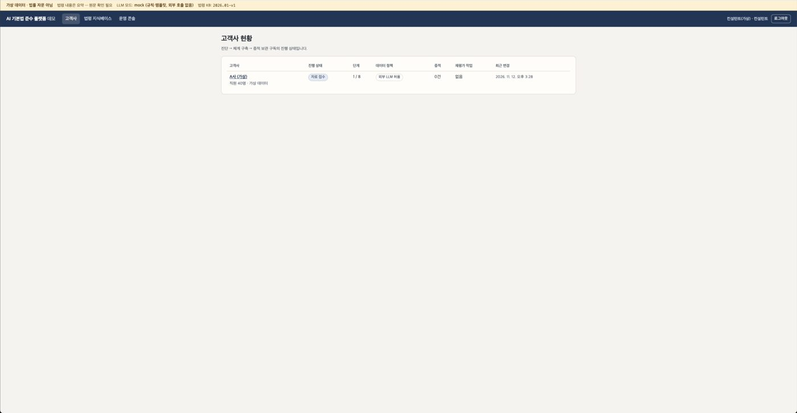
무엇인가
DCP가 맡은 고객사 목록과 각자 어디까지 진행됐는지 한눈에 보는 화면
어떻게 쓰나
고객사 이름(A사 (가상))을 눌러 들어갑니다.
결과 읽는 법
- 진행 상태·단계: 8단계 중 어디인지 (1/8 = 자료 접수 중)
- 데이터 정책: 고객 자료를 외부 AI에 보내도 되는지
- 증적: 보관된 기록 수, 재평가 작업: 다시 봐야 할 건수
주의
고객이 늘면 이 화면이 영업·운영 현황판이 됩니다.
경영진에게 한 줄
"고객사마다 법 준수 진행 상황과 다시 봐야 할 일이 여기서 다 보입니다."
개요·자료 (단계 1, 그리고 전체 진행판)
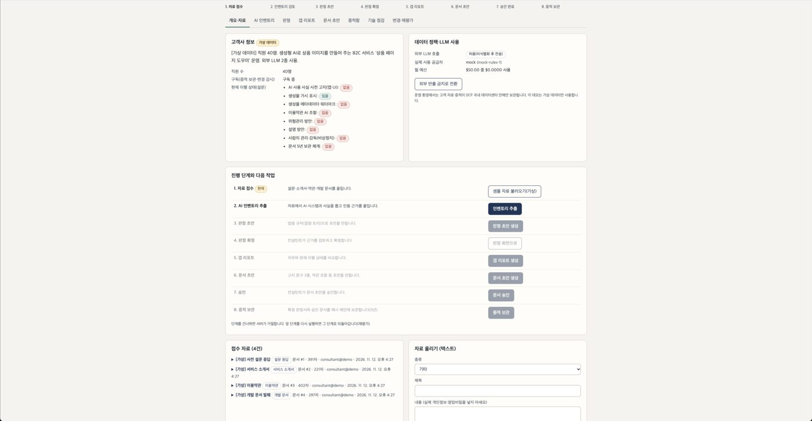
무엇인가
고객 기본 정보, 고객이 설문으로 답한 현재 이행 상태, 데이터 정책, 그리고 8단계 버튼이 모인 출발 화면
어떻게 쓰나
- 샘플 자료 불러오기(가상) → 가상 자료 4건이 들어옴
- 오른쪽 버튼을 위에서부터 차례로 누르면 단계가 진행됨
- 실제 고객이라면 아래 "자료 올리기"에 문서를 넣음
결과 읽는 법
- 현재 이행 상태(설문): 빨간 "없음" = 고객이 아직 안 하고 있는 것. A사는 생성물 가시 표시만 "있음"
- 외부 LLM 호출: "허용(비식별화 후 전송)" = 이름·연락처 등을 가린 뒤 AI에 보냄
- 월 예산: 이 고객에게 쓸 AI 비용 한도와 사용액
주의
외부 반출 금지로 전환을 누르면 이 고객 자료는 외부 AI(Claude)로 절대 나가지 않고 내부 모델이나 규칙으로만 처리됩니다.
경영진에게 한 줄
"고객이 자료를 올리면 버튼 몇 번으로 진단부터 보관까지 진행되고, 고객 자료를 외부로 보낼지 말지도 고객별로 막을 수 있습니다."
AI 인벤토리 (단계 2)
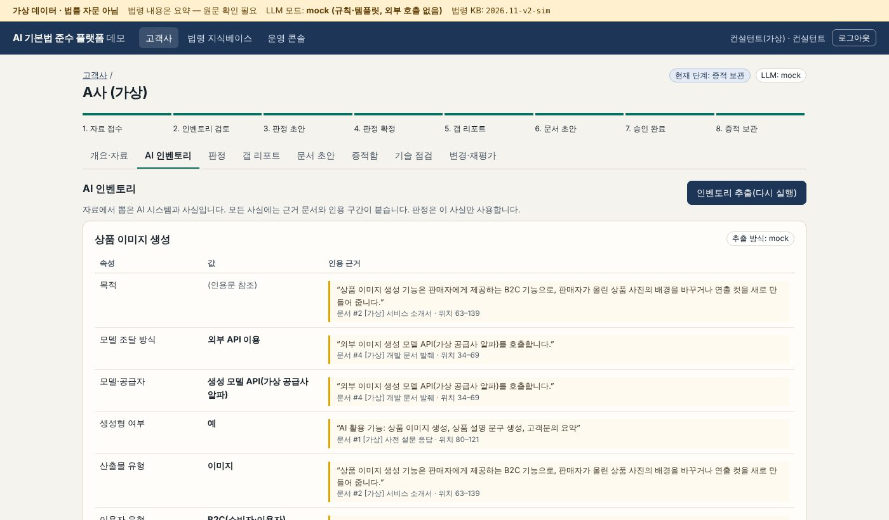
무엇인가
고객 자료를 읽고 "이 회사가 어떤 AI를, 어떻게, 누구에게 쓰는지"를 정리한 목록. A사는 상품 이미지 생성, 상품 설명 문구 생성, 고객문의 요약 3개
어떻게 쓰나
인벤토리 추출을 누르고 이 탭에서 확인합니다. 고객에게 "빠진 AI가 없는지" 확인받는 단계입니다.
결과 읽는 법
- 속성·값: 목적, 외부 API 사용 여부, 생성형 여부, 산출물 종류, 이용자(고객용인지 내부용인지)
- 인용 근거(노란 박스): 그 값을 어느 문서 몇 번째 글자에서 찾았는지. 근거 없는 사실은 쓰지 않음
- 추출 방식: mock이면 규칙, anthropic이면 Claude가 읽음
주의
다음 단계인 판정은 오직 여기 사실만 씁니다. 여기가 틀리면 판정도 틀리므로, 실제 업무에서는 고객 확인이 중요합니다.
경영진에게 한 줄
"AI가 고객 문서를 읽고 사용 중인 AI 목록을 만드는데, 모든 내용에 원문 출처가 붙어 있어 지어낸 내용이 없습니다."
판정 (단계 3·4)
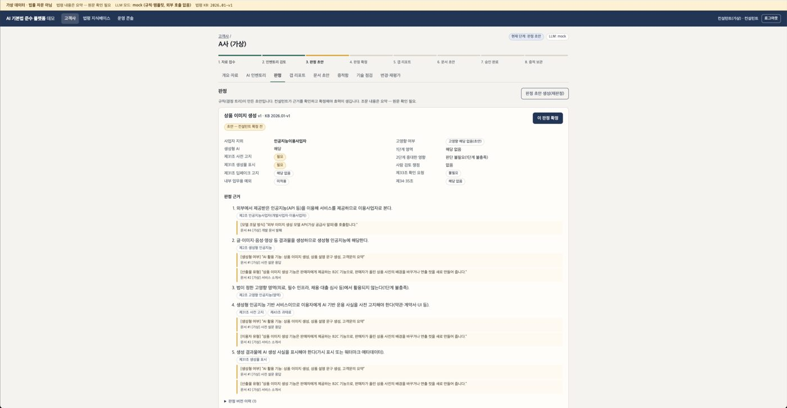
무엇인가
AI 하나하나에 대해 "법의 어떤 의무가 걸리는가"를 내린 판단서. 판단은 AI가 아니라 법 조문을 코드로 옮긴 규칙이 합니다.
어떻게 쓰나
- 개요 화면에서 판정 초안 생성
- 이 탭에서 근거를 읽고 AI마다 이 판정 확정
- 확정해야 다음 단계(갭 리포트)가 열림
결과 읽는 법
- 왼쪽 칸: 사업자 지위, 생성형 여부, 제31조 의무 3가지(필요/해당 없음), 내부 업무용 예외
- 오른쪽 칸: 고영향 여부와 그 판단 2단계(영역 → 중대한 영향)
- 판정 근거: 번호마다 법 조문(회색 태그) + 고객 원문(노란 박스)
A사 결과
이미지·문구 생성은 고객에게 제공되므로 사전 고지와 생성물 표시 필요. 고객문의 요약은 직원만 쓰므로 예외 적용. 세 개 모두 고영향 아님.
경영진에게 한 줄
"판단은 법 조문을 그대로 옮긴 규칙이 하고, 근거가 조문과 원문으로 다 보이며, 최종 확정은 반드시 사람이 합니다."
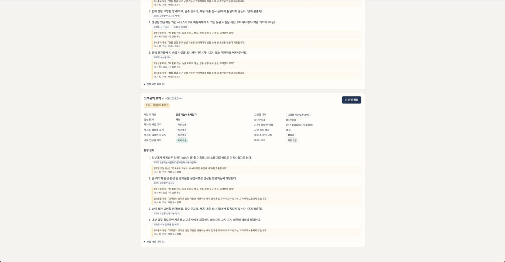
위: 고객문의 요약은 "내부 업무용 예외 — 예외 적용"으로 판정되어 고지·표시 의무가 모두 "해당 없음"입니다.
갭 리포트 (단계 5)
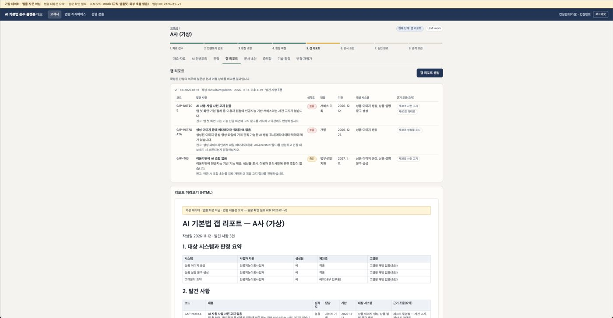
무엇인가
확정된 판정에서 나온 "해야 할 일"과 고객의 "지금 상태"를 비교해 고쳐야 할 목록을 만든 보고서. 고객에게 보내는 진단 결과물입니다.
어떻게 쓰나
갭 리포트 생성을 누르면 표와 함께 아래에 고객 제출용 HTML 보고서가 만들어집니다.
결과 읽는 법
- 코드: GAP-NOTICE(사전 고지 없음), GAP-METADATA(이미지 메타데이터 없음), GAP-TOS(약관 AI 조항 없음)
- 심각도: 높음 = 과태료나 직접 의무 위반 위험
- 담당·기한: 고객사 안에서 누가 언제까지 고칠지 제안
- 근거 조문: 왜 고쳐야 하는지
상품 연결
여기까지가 진단 상품(300만원 가정)의 결과물입니다.
경영진에게 한 줄
"A사는 고칠 것이 3건이고, 그중 2건은 심각도 높음입니다. 담당과 기한까지 정리돼서 고객이 바로 실행할 수 있습니다."
문서 초안 (단계 6·7)
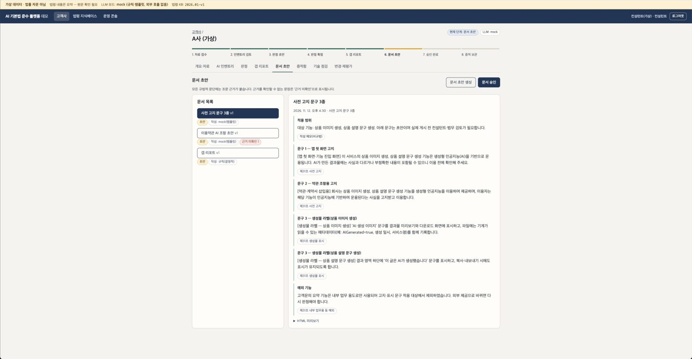
무엇인가
갭을 고치는 데 필요한 실제 문서를 자동으로 쓴 초안. 앱 첫 화면 고지 문구, 약관 삽입 문구, 생성물 라벨 문구, 약관 AI 조항, 갭 리포트
어떻게 쓰나
- 문서 초안 생성
- 왼쪽 목록에서 문서를 골라 오른쪽에서 읽음
- 확인이 끝나면 문서 승인 → 확인창에서 확인
결과 읽는 법
- 문단마다 근거 조문 태그가 붙음
- 근거 미확인 1: 조문과 연결되지 않은 문장이 1개 있음 → 사람이 꼭 검토
- 작성: mock(템플릿) 또는 anthropic: 누가 썼는지
상품 연결
이 문서들이 투명성 패키지(800만원 가정)의 결과물입니다. 고객 개발팀이 그대로 화면과 약관에 반영합니다.
경영진에게 한 줄
"고칠 방법까지 문서로 바로 나오고, AI가 근거 없이 쓴 문장은 자동으로 표시돼서 사람이 거릅니다."
증적함 (단계 8)
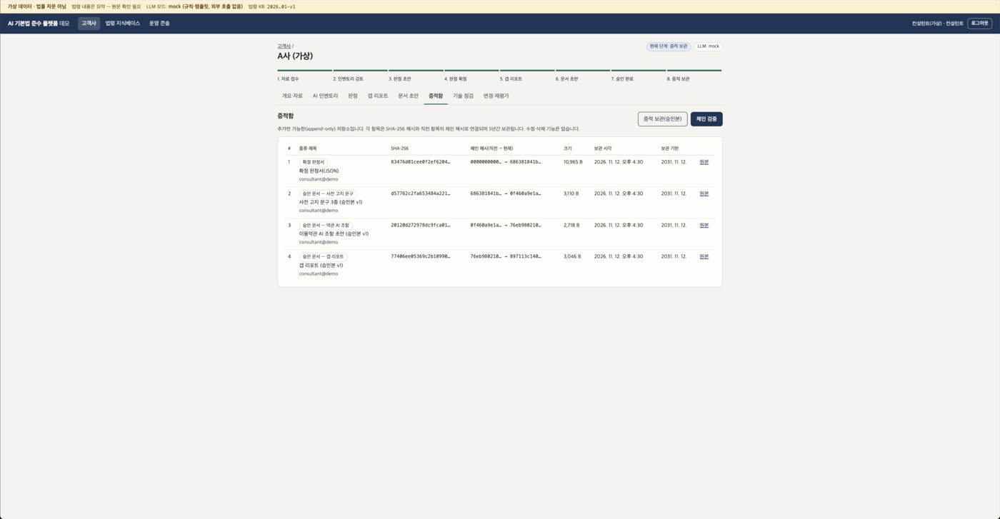
무엇인가
확정된 판정서와 승인된 문서를 고칠 수도 지울 수도 없게 보관하는 금고. 보관 기한은 5년(예: 2031. 11. 12.)
어떻게 쓰나
- 증적 보관(승인본): 승인된 결과를 금고에 넣음
- 체인 검증: 금고 안 기록이 하나도 바뀌지 않았는지 검사
- 원본: 보관된 파일 열람
결과 읽는 법
- SHA-256: 파일의 지문
- 체인 해시(직전 → 현재): 앞 기록과 사슬처럼 엮인 값. 1번은 0000…에서 시작
- 체인 검증 "정상" = 위변조 없음
상품 연결
증적 보관 구독(월 100만원 가정)의 핵심. 운영 환경에서는 DCP 국내 센터 안에 보관합니다.
경영진에게 한 줄
"법이 요구하는 5년 보관을 DCP 데이터센터가 해 주고, 단 한 글자라도 바뀌면 바로 드러나는 구조입니다. IDC 사업자만 할 수 있는 상품입니다."
기술 점검 (구독 서비스)
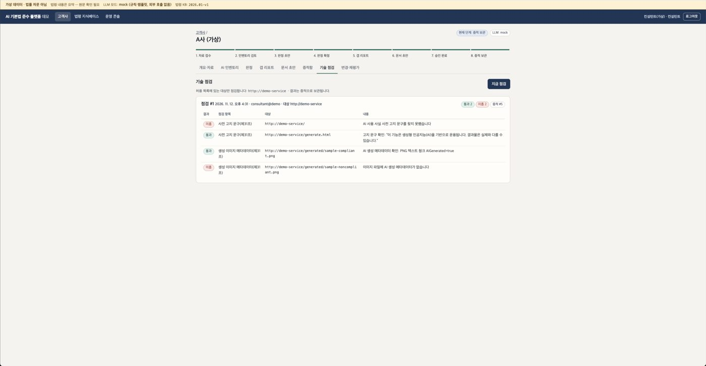
무엇인가
고객의 실제 서비스 화면과 AI가 만든 파일을 시스템이 직접 들어가 보고, 고지 문구와 AI 생성 표시가 제대로 있는지 검사
어떻게 쓰나
지금 점검. 평소에는 매주 자동으로 돕니다. 허락받은 주소(허용 목록)만 점검합니다.
결과 읽는 법
- 통과 2 / 미흡 2
- 미흡: 메인 화면(/)에 AI 고지 문구 없음
- 통과: 생성 화면(generate.html)에는 고지 있음
- 통과: 이미지 1개에 AIGenerated=true 표시 있음 / 미흡: 다른 이미지에는 없음
- 결과는 증적 #5로 자동 보관
의미
문서만 고친 게 아니라 실제 서비스에 반영됐는지를 계속 확인합니다. 데모의 A사 사이트는 가상으로 만든 것입니다.
경영진에게 한 줄
"고객이 실제로 고쳤는지 시스템이 매주 직접 확인하고, 그 결과까지 증거로 남깁니다."
변경·재평가 (구독 서비스)
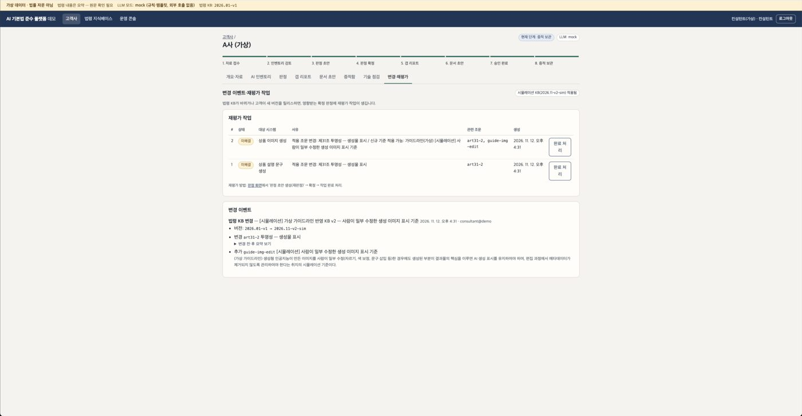
무엇인가
법이나 가이드라인이 바뀌면, 영향을 받는 고객 판정을 찾아 "다시 봐야 함" 작업을 자동으로 만드는 화면
어떻게 쓰나
- 법령 변경 반영(시뮬레이션): "사람이 일부 수정한 AI 이미지도 표시해야 한다"는 가상 가이드라인을 적용
- 재평가 작업 2건이 생김
- 판정 탭에서 판정 초안 생성(재판정) → 확정
- 여기로 돌아와 완료 처리
결과 읽는 법
- 재평가 작업: 미해결/완료, 대상 AI, 사유, 관련 조문
- 변경 이벤트: 법 버전이 2026.01-v1 → 2026.11-v2-sim으로 바뀐 내용과 무엇이 추가됐는지
- 고객문의 요약(내부용)은 영향 없으므로 작업이 안 생김
상품 연결
구독 고객에게 "법이 바뀌면 저희가 먼저 알려드립니다"를 제공하는 기능입니다.
경영진에게 한 줄
"법이 바뀌면 영향받는 고객과 AI를 시스템이 바로 찾아 다시 판정하게 합니다. 이것이 매달 구독료를 받는 이유입니다."
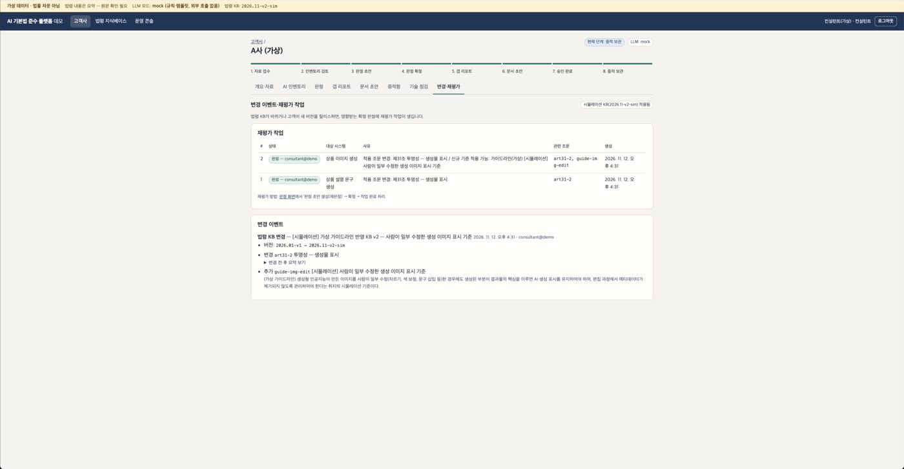
위: 재판정과 완료 처리까지 끝나면 두 작업 모두 "완료 — consultant@demo"로 바뀝니다. 누가 처리했는지도 기록됩니다.
법령 지식베이스
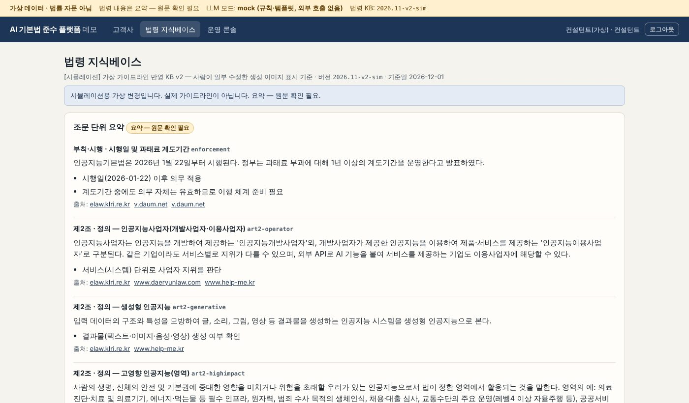
무엇인가
시스템이 판정할 때 참고하는 AI 기본법 조문 요약집. 조문마다 출처 링크가 있음
어떻게 쓰나
읽기 전용입니다. 판정 근거의 회색 조문 태그가 여기 항목을 가리킵니다.
결과 읽는 법
- 버전·기준일: 지금 어느 법령 기준으로 판정하는지
- 요약 — 원문 확인 필요: 원문이 아니라 요약이라는 표시
주의
지금 화면은 시뮬레이션 v2가 적용된 상태라 "가상 변경" 안내가 함께 보입니다.
경영진에게 한 줄
"법 조문을 버전별로 관리하고 출처를 다 달아 두어서, 판정이 어느 시점의 어떤 법 기준인지 항상 설명할 수 있습니다."
운영 콘솔
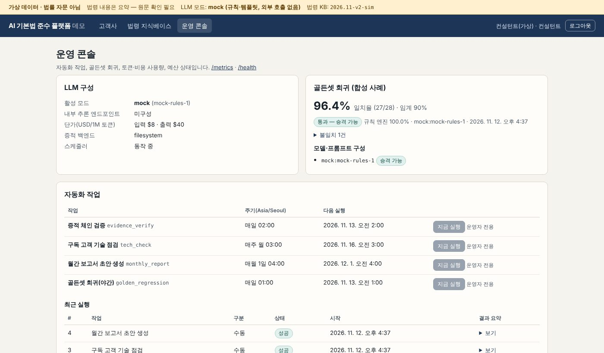
무엇인가
사람 손 없이 돌아가는 자동화 작업, AI 품질 점검, 비용을 관리하는 화면
어떻게 쓰나
평소에는 보기만 합니다. 시연 때는 ops@demo로 들어가 지금 실행을 누르면 예약된 작업을 즉시 돌릴 수 있습니다.
결과 읽는 법
- LLM 구성: 지금 쓰는 AI와 단가(입력 $8 / 출력 $40, 100만 토큰당)
- 골든셋 회귀: 정답 아는 시험 33문제 중 맞힌 비율. 90% 아래면 새 설정을 "승격 차단"
- 자동화 작업 4개: 매일 증적 검증, 매주 기술 점검, 매월 보고서 초안, 매일 골든셋 시험
- 고객별 예산·토큰 사용량: AI 비용
주의
골든셋 96.4%는 시스템이 스스로 만든 시험 기준이라, 실제 고객 문서에서의 정확도가 아닙니다. "품질이 떨어지지 않았는지 보는 경보"로 설명하세요.
경영진에게 한 줄
"점검·보관·보고는 밤사이 자동으로 돌고, AI 품질이 떨어지면 시스템이 스스로 막습니다. 운영 인력이 거의 필요 없습니다."
아래 세 화면은 이후 버전에서 추가됐습니다. 앞의 캡처(이전 버전)에는 상단 메뉴 "AI 기본법 한눈에"와 "고객사 등록" 버튼이 보이지 않습니다. 시나리오의 회사·문서는 전부 가상입니다.
고객사 등록
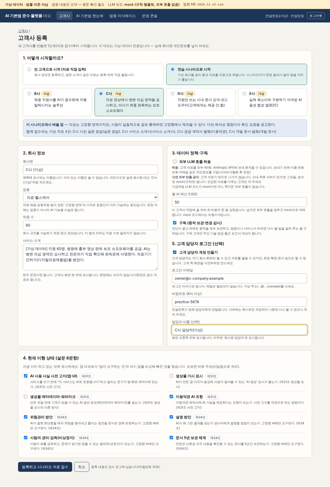
무엇인가
새 고객사를 만드는 화면. 등록하면 1단계(자료 접수)부터 A사와 같은 8단계를 처음부터 밟습니다.
어떻게 쓰나
- 빈 고객으로 시작: 회사 정보만 넣고 자료는 나중에 직접 올림
- 연습 시나리오로 시작: B~E사 중 하나를 고르면 폼과 가상 자료가 채워짐
- 고객 담당자 로그인(이메일·비밀번호)을 함께 만들 수 있음
항목 읽는 법
- 외부 LLM 호출 허용: 켜면 개인정보를 가린 뒤 외부 AI로 전송, 끄면 외부 반출 금지
- 현재 이행 상태 8문항: 지금 이미 하고 있는 것. 갭 리포트가 이 답과 법의 요구를 비교
주의
같은 회사명은 다시 쓸 수 없습니다. 가상 데이터 전용이므로 실제 회사명·개인정보를 넣지 마세요. 등록은 감사 로그에 남습니다.
경영진에게 한 줄
"새 고객이 오면 여기서 등록하고, 그 순간부터 진단 8단계가 같은 방식으로 돌아갑니다."
연습 시나리오 A~E로 법 이해하기
회사 다섯 곳을 직접 돌려 보고 결과가 왜 다른지 비교합니다. A사는 처음부터 들어 있고 B~E사는 고객사 등록에서 고릅니다.
| 시나리오 | 어떤 회사 | 판정 결과 | 갭 | 배울 점 |
|---|---|---|---|---|
| A사 | 생성형 AI로 상품 이미지·문구를 만드는 B2C 앱 | 사전 고지 + 생성물 표시, 고영향 아님 | 3건 | 외부 AI를 붙여 고객에게 결과물을 주면 알리고 표시해야 한다 |
| B사 | 채용 지원서를 AI가 점수화해 자동 탈락 | 고영향 후보, 제34·35조 준비, 형식적 검토 건은 제33조 확인 요청 권고 | 8건 | 생성형이 아니어도 고영향이면 의무가 가장 무겁다 |
| C사 | 의료 영상 판독 보조, 전문의가 최종 판독 | 제외 가능(쟁점), 제33조 확인 요청 권고, 타법 이행 간주 가능 | 1건 | 같은 고영향 영역이라도 사람이 실질적으로 검토하면 달라진다 |
| D사 | 직원만 쓰는 사내 문서 요약·코드 도우미 | 내부 업무용 예외, 제31조 의무 없음 | 0건 | AI를 쓴다고 다 의무가 생기지 않는다. 0건은 결과다 |
| E사 | 실제 목소리와 구분하기 어려운 음성 합성 앱 | 사전 고지 + 생성물 표시 + 딥페이크 명확 고지 | 3건 | 실제와 구분하기 어려우면 한 단계 더 강한 고지가 붙는다 |
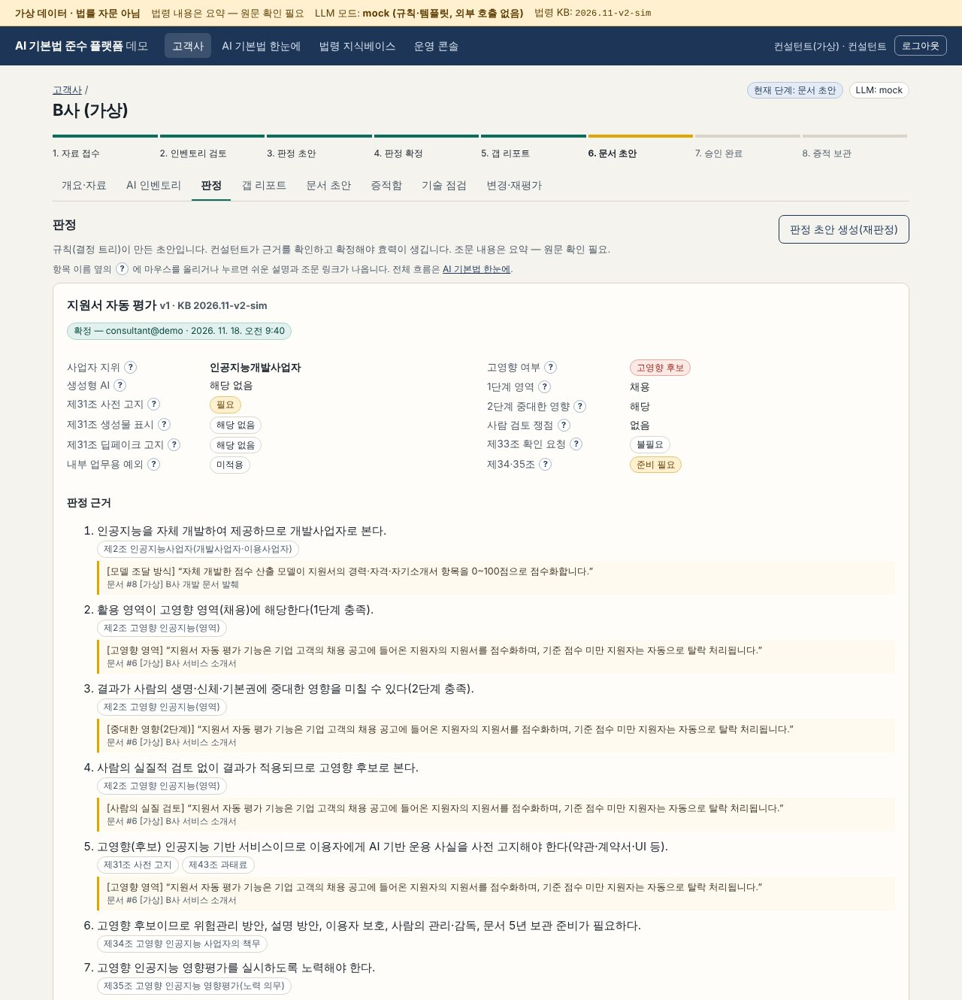
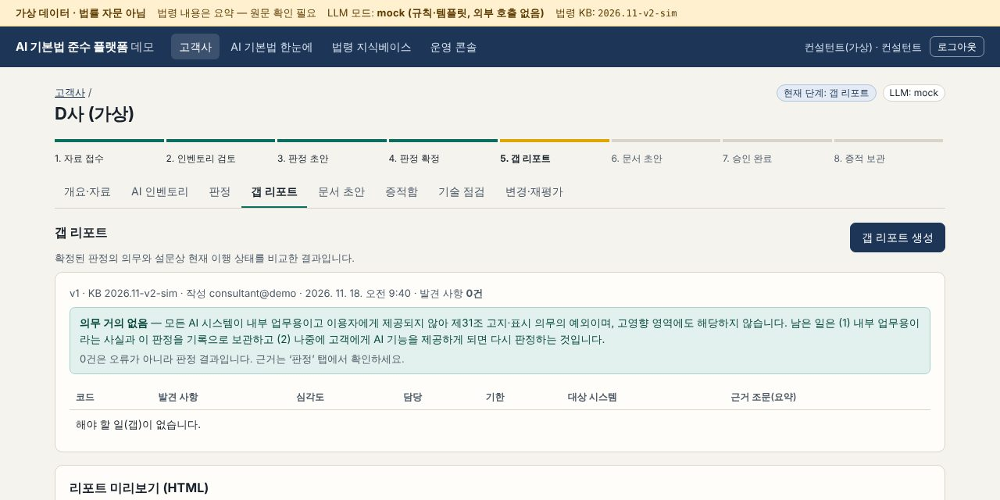
기대 결과는 이 데모의 규칙 해석이며 법적 판단이 아닙니다. 추천 순서와 실험 방법은 USER_GUIDE.md 13장에 있습니다.
AI 기본법 한눈에와 화면 속 설명
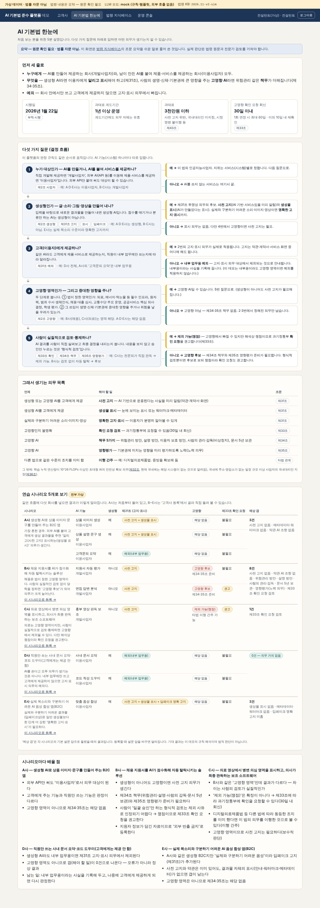
무엇인가
다섯 가지 질문(누가 대상인가 → 생성형인가 → 고객에게 제공하나 → 고영향 영역인가 → 사람이 실질적으로 검토하나)에 답하면 어떤 의무가 생기는지 보여 주는 한 페이지 설명
어떻게 쓰나
조문 태그를 누르면 법령 지식베이스의 조문 요약으로 이동합니다. 시나리오 표에서 바로 등록 폼으로 갈 수 있습니다.
화면 속 설명
- 개요: 단계마다 이 단계는?
- 판정: 항목 옆 ? (뜻과 조문 링크)
- 갭 리포트: 0건이면 그 이유
주의
법령 지식베이스의 요약만 풀어 쓴 것입니다. 요약 — 원문 확인 필요 · 법률 자문 아님.
10분 시연 순서
consultant@demo로 로그인한 상태에서 시작합니다. A사를 처음부터 보여주려면 개요에서 "샘플 자료 불러오기(가상)"부터 누르세요.
- 0~1분문제 제기: "AI 기본법이 1월에 시행됐고 과태료 계도기간이 끝나면 고지 위반만으로 3천만원입니다. 생성형 AI를 서비스에 쓰는 입주사들이 대상입니다."
- 1~2분개요·자료: 가상 고객 A사 소개, 설문상 빨간 "없음" 항목들
- 2~3분AI 인벤토리: "AI가 문서를 읽고 AI 3개를 찾았고, 모든 내용에 출처가 있습니다."
- 3~5분판정: 이미지 생성 판정 하나를 펼쳐 근거 조문과 원문을 보여주고, 고객문의 요약의 "내부 업무용 예외"를 대비해서 보여줌. "확정은 사람이 합니다."
- 5~6분갭 리포트: "고칠 것 3건, 담당·기한까지 나옵니다. 여기까지가 진단 상품입니다."
- 6~7분문서 초안: 고지 문구 3종, "근거 미확인" 표시 설명
- 7~8분증적함: 체인 검증 누르기. "5년 보관을 DCP 센터가 합니다. IDC만 할 수 있는 상품입니다."
- 8~9분기술 점검·변경 재평가: "고객이 실제로 고쳤는지 매주 확인하고, 법이 바뀌면 자동으로 다시 봅니다. 이게 구독료입니다."
- 9~10분운영 콘솔과 마무리: 자동화 작업과 비용. "서버 1대와 컨설턴트 1명으로 시작할 수 있습니다."
예상 질문과 답
AI가 법률 판단을 하는 건가요? 틀리면 책임은?
아닙니다. 판단은 법 조문을 규칙으로 옮긴 프로그램이 하고, AI는 고객 문서에서 사실을 찾고 문서 초안을 쓰는 역할만 합니다. 최종 확정과 승인은 컨설턴트가 하고, 법령 해석이 필요한 부분은 제휴 로펌이 맡는 구조입니다. 화면에도 "법률 자문 아님"이 항상 표시됩니다.
고객 자료가 해외 AI 회사로 넘어가나요?
외부 AI로 보낼 때는 이름·연락처·번호 같은 개인정보를 가린 뒤 보냅니다. 고객이 원하면 "외부 반출 금지"로 바꿔 외부로 아예 보내지 않을 수 있고, 이 경우 나중에 DCP 서버의 내부 모델로 처리합니다. 증적과 원본은 운영 환경에서 DCP 국내 센터에만 보관합니다.
지금 화면의 데이터는 실제인가요?
모두 가상입니다. A사도, A사 서비스 사이트도, 법령 변경 v2도 시연용으로 만든 것입니다. 법 조문 요약은 공개 자료를 근거로 했지만 원문 확인이 필요합니다.
mock 모드와 anthropic 모드는 뭐가 다른가요?
mock은 정해진 규칙과 템플릿으로 답하는 무료 모드이고, anthropic은 Claude Fable 5.2가 실제로 문서를 읽고 씁니다. 판정 규칙은 두 모드가 같고, 인벤토리 추출과 문서 작성의 품질이 달라집니다. 지금 데모는 anthropic 모드로 연결돼 있습니다.
AI 비용은 얼마나 드나요?
고객 1곳의 진단·문서 작업에 드는 AI 비용은 매출의 약 6% 수준으로 추정합니다(기획서 기준). 운영 콘솔에서 고객별 사용량과 월 예산을 실시간으로 볼 수 있고, 예산을 넘으면 자동으로 멈추거나 무료 모드로 바뀝니다.
사업화하려면 무엇이 더 필요한가요?
파일럿용 서버 1대(기존 1U 서버에 메모리 증설), 입주사 파일럿 3곳, 제휴 로펌, 컨설턴트 1명입니다. 자세한 내용은 사업기획서 v2에 있습니다.